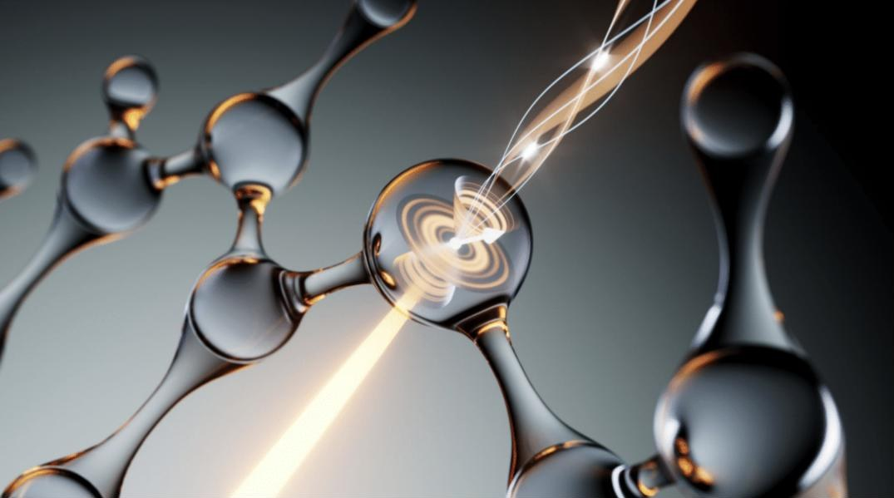

Quantum sensing
Sensing protocols for spins in diamond: nano-scale NMR, high-resolution spectroscopy and hyperpolarization of nuclear spins for chemistry and medicine.
Racah Institute of Physics · The Hebrew University of Jerusalem
We study the foundations of quantum technologies.
Our group develops theory for quantum sensing and quantum computing, together with experimental teams working on NV centers in diamond, trapped ions, superconducting circuits and molecular qubits.

Sensing protocols for spins in diamond: nano-scale NMR, high-resolution spectroscopy and hyperpolarization of nuclear spins for chemistry and medicine.
Erasure qubits, magic state preparation and new codes that make fault-tolerant quantum computers cheaper to build.
Robust gates and dynamical decoupling for trapped ions, superconducting circuits and spins, designed to survive real-world noise.
PRX Quantum 7, 033059 (2026)DOI